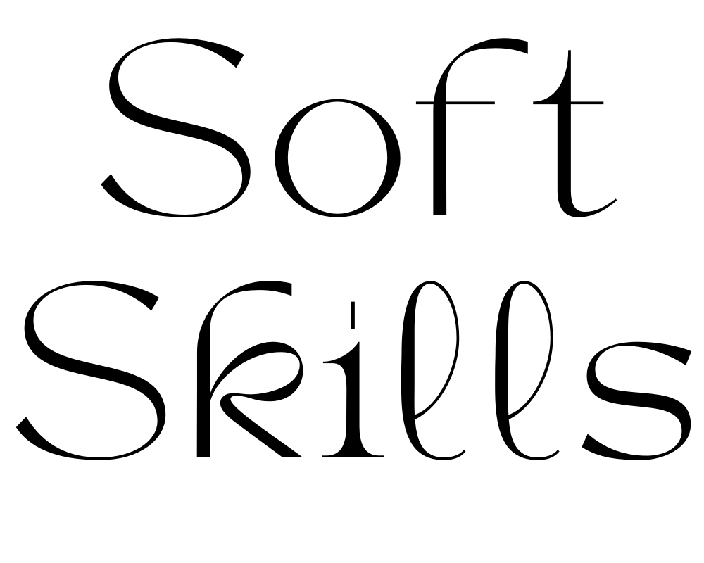
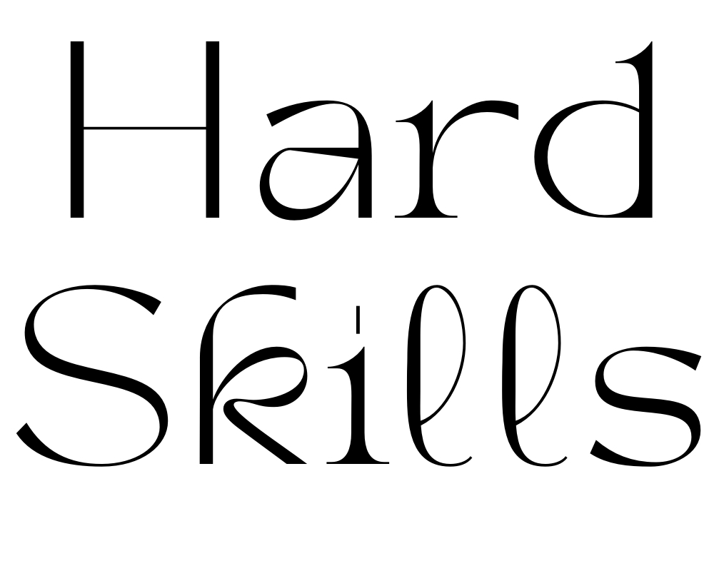

Lets dive into it....
Embark on a journey with me, a fresh face in the tech world,
where curiosity drives innovation and every project is a step
towards mastering the art of coding. Together, we'll explore
the vast landscape of technology, turning budding ideas into
impactful digital solutions, one line of code at a time.
With a background rooted in the beauty industry,
I've taken an unconventional path to software development,
driven by a deep-seated passion for creativity and innovation.
My journey from beauty to tech has been fueled by a desire to blend
aesthetic elegance with functional design, reflecting a commitment to
crafting not just code, but experiences that resonate on a personal level.
This transition has honed key professional attributes such as meticulous attention
to detail, exceptional problem-solving skills, and an ability to adapt and thrive in
fast-paced environments. These skills, combined with a collaborative spirit and a client-focused approach,
have become the cornerstone of my work ethic in technology.
My history in the beauty sector where personal
interaction and understanding client needs are paramount, has imbued me with a unique perspective on user
experience, making me a diligent, empathetic, and innovative software developer with a flair for creating solutions
that are not only effective but also aesthetically pleasing.

Empathy
My ability to empathise with others allows me to understand clients'
needs deeply, ensuring that the solutions I develop are not only technically
sound but also truly meet their requirements. This empathy fosters strong client
relationships and drives customer satisfaction.
Time Management
With a keen sense of time management, I prioritise tasks effectively and consistently
meet deadlines without compromising on quality. This ensures project milestones are achieved
on schedule, contributing to overall project success and client satisfaction.
Adaptability
In the fast-paced world of technology, being adaptable is crucial.
My flexibility and openness to change enable me to quickly pivot in
response to evolving project requirements or unexpected challenges,
ensuring project success even in dynamic environments.
Collaboration
I thrive in collaborative environments, valuing the diverse perspectives
and expertise that each team member brings to the table. By fostering an
inclusive and collaborative atmosphere, I contribute to a positive team dynamic
and drive collective success.
Porblem Solving
As a natural problem-solver, I approach challenges with creativity and persistence,
exploring innovative solutions to complex problems. This skill not only enables me
to overcome obstacles efficiently but also fuels continuous improvement and growth.

Technical Proficiency
Learning to master Markdown, HTML, and CSS allows me to create visually appealing and structured
web content with precision and efficiency.
Version control
Proficient in utilizing Git for version control, leading towards efficient collaboration with team members
and tracking changes throughout the development process.
Command Line Proficiency
Skilled in navigating and executing commands in the terminal, enhancing workflow efficiency and enabling
seamless interaction with the operating system.
Learning Agility
Embracing a growth mindset, I approach software engineering with enthusiasm and a willingness to learn new concepts,
technologies, and methodologies. This eagerness for continuous learning drives my personal and professional development
in the field.
Positive Attitude
Maintaining a positive attitude towards learning and growth, I am committed to expanding my skill set and mastering the art of
software engineering. This optimistic outlook fosters a collaborative and supportive environment, driving success in both individual
and team endeavors.
Feedback Orientation
Actively seeking feedback from clients, colleagues, and mentors to identify areas for improvement and implement constructive changes.
In my early journey as a software development student, I've already delved into a range of foundational programs,
laying the groundwork for my future in the field. From mastering Markdown for streamlined documentation to crafting visually
appealing web content with HTML and CSS, I'm steadily building a toolkit of essential skills.
Git has become my go-to for version control, while navigating the terminal has opened up a world
of efficient workflow possibilities.
While these are just the beginnings of my student journey, I'm eager to dive deeper into the
vast universe of software programs and technologies ahead.